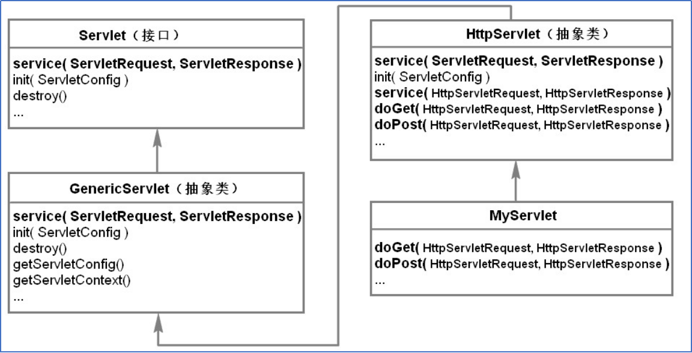

10_Servlet
Jul 16, 2016
目录
- Servlet
- Servlet程序开发
- 详解Servlet
- 注意事项
- 四大域对象
Servlet
sun公司提供的动态web资源开发技术, 本质是运行在Servlet容器(tomcat服务器)的java程序.
Servlet程序开发
- 创建一个类, 实现Servlet接口, 实现方法
- 编译新建类, class文件放入web应用中(WEB-INF/classes/下)
- 配置web.xml, 设置servlet对外访问的虚拟路径
- 部署web应用到虚拟主机
1
2
3
4
5
6
7
8
9
10
11
12
13
14
15
16
17
18
19
20
21
22
23
24
25//编写FirstServlet类, 实现Servlet接口, 实现方法
public class FirstServlet implements HttpServlet{
...
}
//添加包, imort javax.servlet.*;
//设置包路径, package cn.tinytiny.servlet;
//cmd
//设置servlet.jar包路径
set classpath=E:\XXX\tomcat7.0\lib\servlet-api.jar
//编译
javac -d . FirstServlet.java
//class文件添加到WEB-INF/classes中
//配置web.xml
<web-app>
<servlet>
<servlet-name>FirstServlet</servlet-name>
<servlet-class>cn.tinytiny.servlet</servlet-class>
</servlet>
<servlet-mapping>
<servlet-name></servlet-name>
<url-pattern>/FristSerlvet</url-pattern>
</servlet-mapping>
</web-app>
//浏览器访问虚拟路径/MyWebApp/FirstServlet
http://localhost:8080/MyWebApp/FirstServlet
详解Servlet
- Servlet继承结构

- Servlet 生命周期
调用过程:
Servlet第一次被访问时, 服务器创建一个Servlet实例, 之后立即调用init()方法进行初始化, 之后该实例一致驻留在服务器内存中, 等待后续请求. 服务器接收浏览器请求时, 服务器调用service方法处理请求, 直至服务器关闭或web应用被移除. Servlet实例销毁之前, 服务器调用destory方法进行后续处理.

注意事项
虚拟路径配置:
- 可以使用直接路径
- 可以使用匹配符配置路径
1
2
3
4
5
6
7
8
9/开头, /*结尾
/*
/path/*
*.后缀
*.html
*.php
*.jsp
*.do
四大域对象
- pageContext 属性范围仅当前jsp页面, servlet中无法获取该对象
- request 属性范围仅同一个请求, 主要用于请求转发
- session 属性范围仅一次会话, servlet中通过request对象获取
- application 属性范围仅当前web应用, jsp或servlet中都可以获得, 对应ServletContext对象.